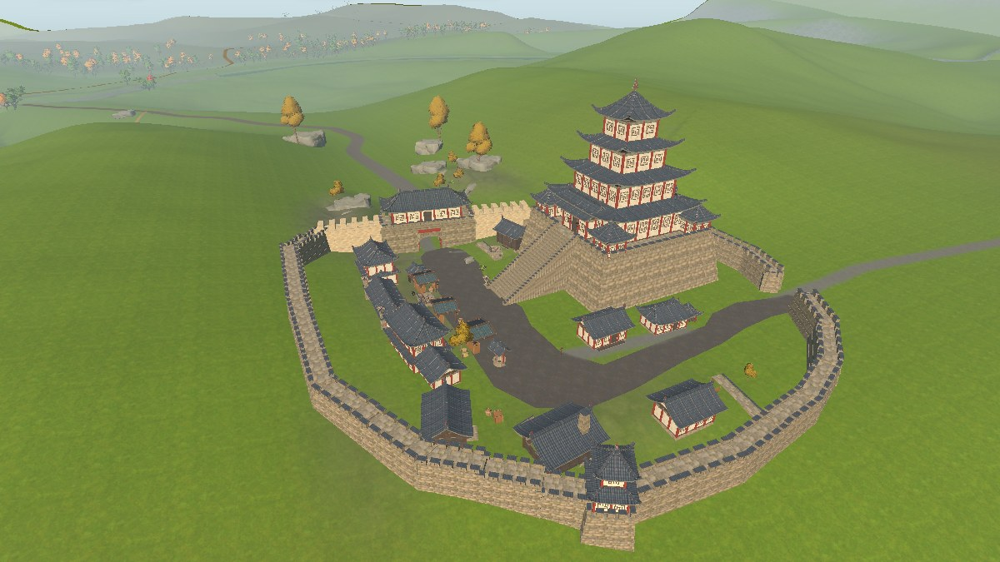
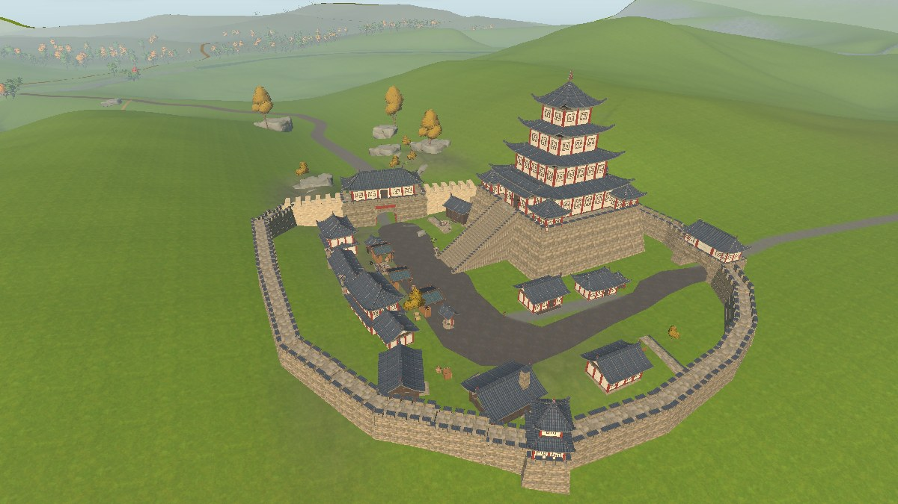
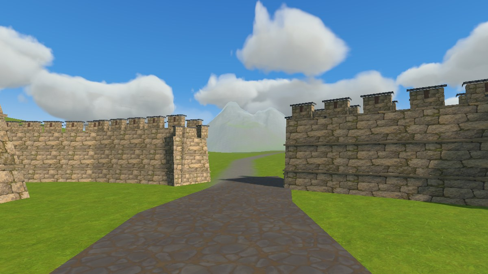
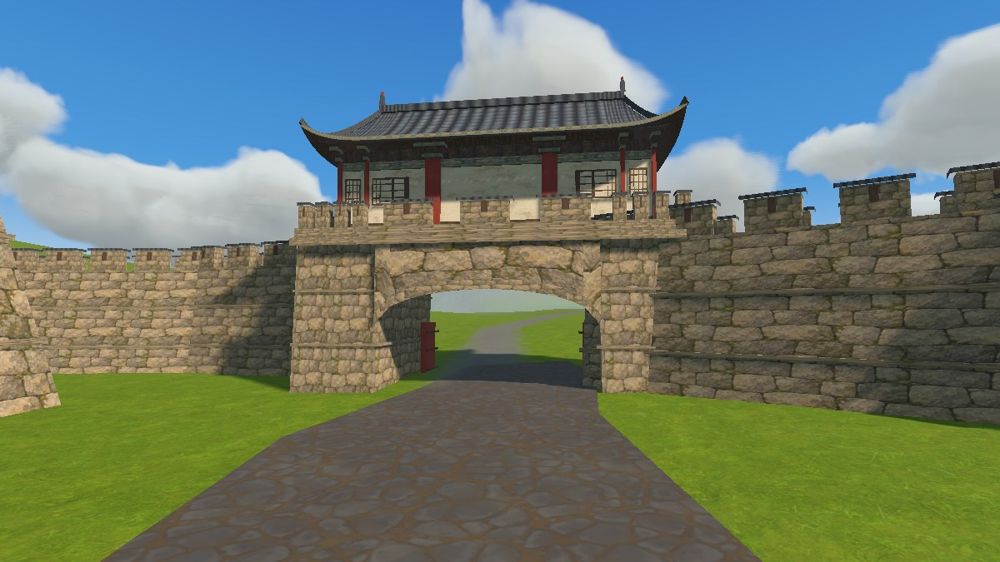
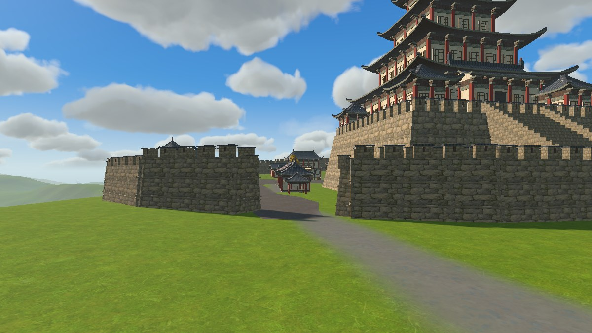
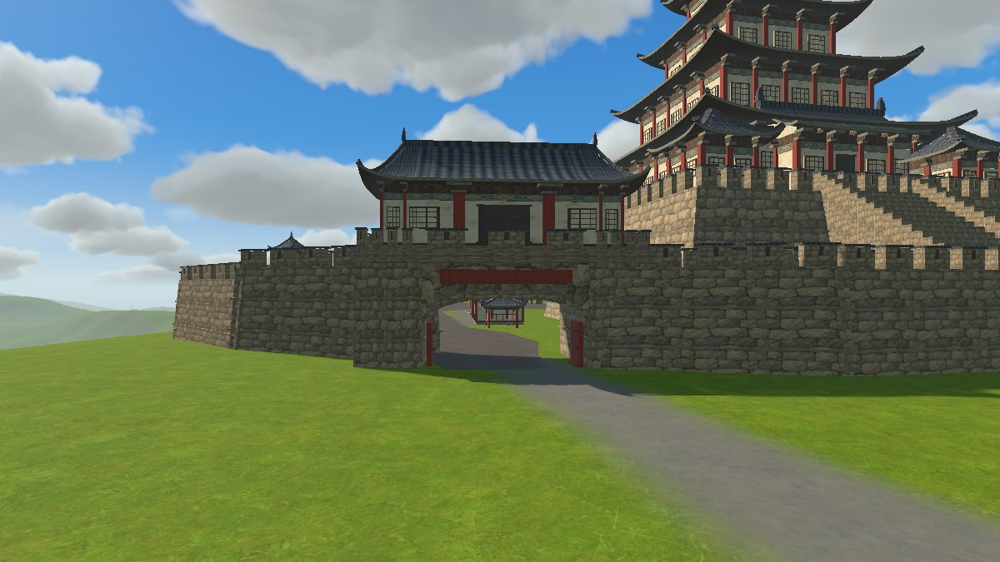
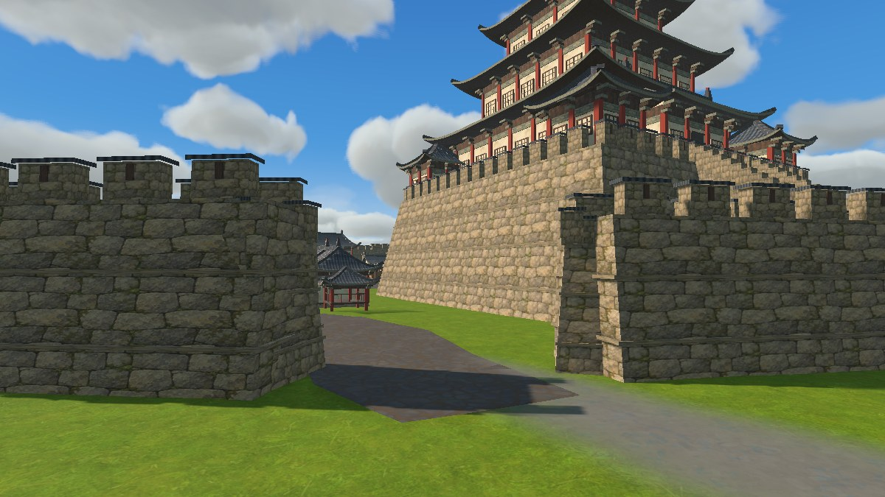
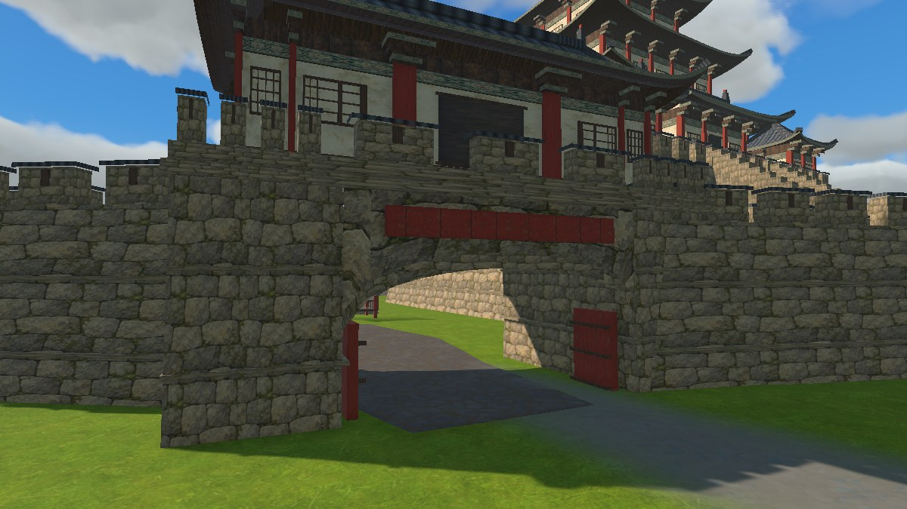

성벽 양끝 사이에 비어 있던 설산길 출구에 낮은 보조 문루를 세웠다. 기존 기와 문루의 옆 석축을 줄이고 개구 폭은 넓혀 양쪽 성벽과 설산길에 맞췄다. 골목 포석과 성 밖 흙길이 문 아래에서 이어진다.
Unity Editor의 폭 3.60m 통행 띠에서 보행 캡슐 1,022개의 접지와 겹침 0을 확인했다. 양쪽 성벽의 투영 충돌면과 문루가 겹쳤다. 상향 천장 레이 169개가 모두 적중했고 고정 카메라 네 구도의 시작점과 전방 2m에서 새 문루 충돌체 겹침이 없었다. 연속 TPS 이동과 카메라 가림 체감은 사용자 확인 대기다.
Unity Editor 검사 원본 · 카메라 좌표 · 작업 상태 · 월드와 아트 위키







